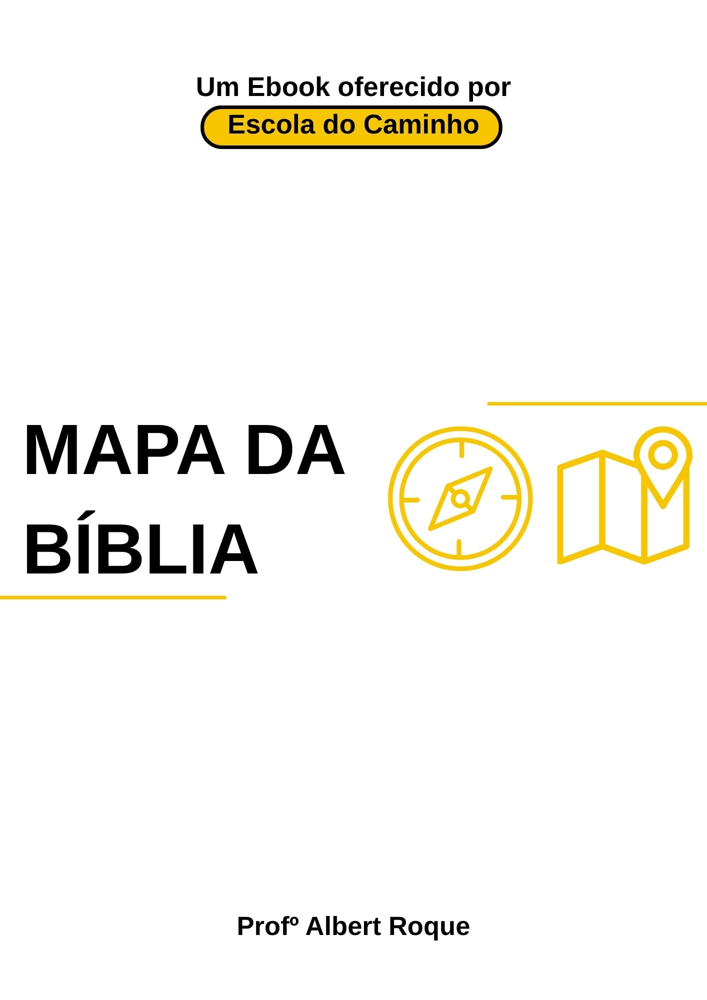
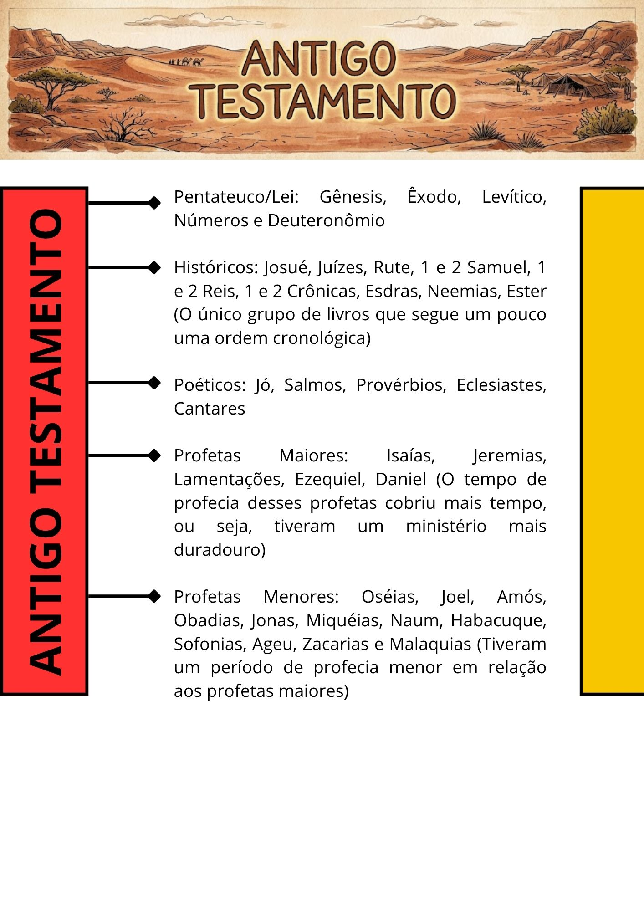
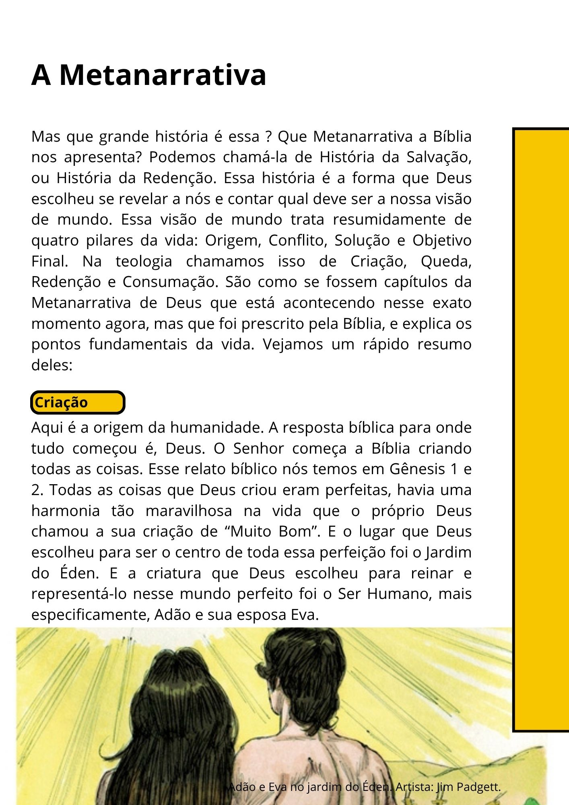
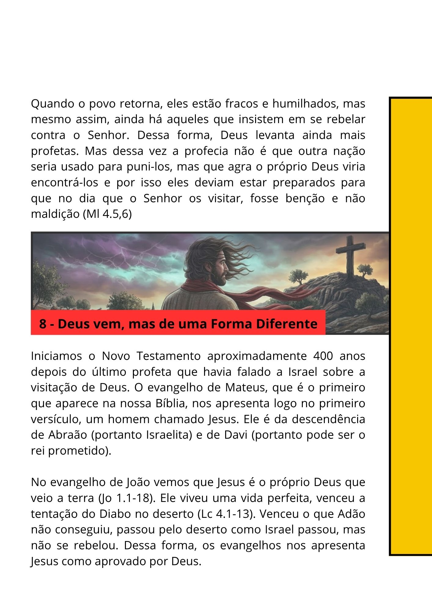

Você abre a Bíblia com vontade de aprender. Mas ao se deparar com leis antigas, profecias complexas e genealogias intermináveis, a leitura trava. Em vez de clareza, vem a confusão. Você fecha o livro com a sensação de que falta uma peça no quebra-cabeça. Isso soa familiar?
Pare e pense: quantas vezes você deixou de falar sobre a Palavra por insegurança? Quantas vezes a sua congregação deixou de ser edificada porque você teve medo de interpretar um texto de forma errada? Quando não compreendemos a verdadeira história bíblica, nós perdemos a confiança para ensinar, e a igreja perde a profundidade que só a verdade traz.
A grande verdade é que a Bíblia não é uma confusão. Ela é um território vasto e maravilhoso. Mas nenhum explorador entra em uma terra desconhecida sem as ferramentas certas. Apresento a você o Mapa da Bíblia. Um material direto ao ponto, criado para conectar as pontas soltas da sua leitura.




Deslize para ver o material ➔
Neste e-book gratuito, você vai encontrar:
Sou o Profº Albert Roque. Como historiador e especialista em gestão educacional, dedico a minha vida a ensinar teologia com profundidade, responsabilidade e clareza. Meu objetivo é pegar toda a complexidade histórica das Escrituras e entregar a você de uma forma estruturada, para que você tenha segurança absoluta naquilo que lê e ensina.
Para garantir que você receba o material e não perca nenhum conteúdo extra, o download oficial acontece dentro do nosso Grupo de Estudos no WhatsApp. Fique tranquilo: é um grupo silencioso e 100% livre de spam. Sem mensagens de "bom dia" e sem incomodação. Apenas o link do seu e-book e conteúdos teológicos de alto nível.
QUERO ENTRAR NO GRUPO E BAIXAR O MAPA